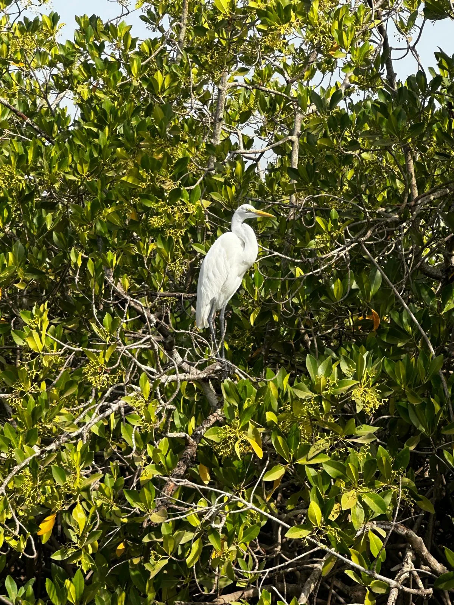

Pickup and drive to Banjul
Start from your hotel or agreed pickup point and head toward the capital with local context along the way.
Pickup from Kololi, Kotu, Senegambia, Banjul and nearby areas.
Private half-day tour / from $55
A culture-rich private tour through Banjul's market streets, craft stalls, heritage corners and everyday city life, guided at an easy pace.
Banjul is compact, colorful and full of details that are easy to miss without a local guide. This half-day route can include Albert Market, craft stalls, city squares, heritage points and relaxed shopping support.
It is a strong choice for travelers who want a meaningful city tour without spending the whole day on the road. The guide helps with context, pacing and practical market etiquette.



Stops can be shortened or extended depending on traffic, weather and your shopping interests.
Start from your hotel or agreed pickup point and head toward the capital with local context along the way.
Pickup from Kololi, Kotu, Senegambia, Banjul and nearby areas.Explore the market streets, textile stalls, produce sections, craft corners and everyday rhythm of Banjul with your guide.
Best for photos, local life and shopping support.Add heritage points such as the Arch 22 area, city squares or museum surroundings when timing and opening conditions allow.
Route is adjusted to the day.Finish with a craft stop, simple snack break or direct return to your hotel.
Optional stops can be planned before confirmation.Final route and pickup time are confirmed before booking.
Albert Market, local streets and selected heritage or craft stops.
Pickup from the main coastal hotel areas and nearby Banjul locations.
Local guidance with market rhythm, shopping etiquette and practical tips.
English-speaking guide as standard, Polish-speaking guide on request.
We will reply from info@gambiantour.com with availability and pickup details.